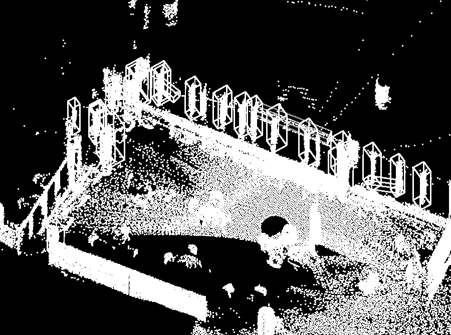
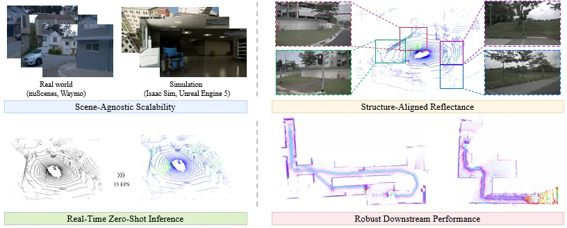

静态网页 · 2026-10-04
可靠状态估计与空间智能每日论文阅读
沿“底层几何 → 3D/4D 表征 → 空间推理 → 具身决策”查看当天候选；按层级、评分、截图和中文摘要筛选，需要原文时可切换 English。
候选论文：2推荐论文：2新论文：2仓库：7新仓库：0
今日概览
- 结论先行：今天是“低产出日”。7 天窗口只命中 2 篇非医疗新论文，且都偏向“把可靠性/数据质量做成可验证指标的工程侧”，而不是新的几何表示或学习方法：GlassGuard 用「玻璃覆盖率 + 自由空间污染率」双指标约束视觉+LiDAR 的玻璃平面重建，直接指向 LiDAR 地图可用性/自由空间一致性；NIDAR 用伪 NIR + 本征分解前馈合成仿真 LiDAR 强度，服务强度感知 SLAM 的数据管线。两条都可作为“服务主线的可靠性/数据质量”参考，但均无 S/A 层级、不构成新的估计或学习机制。
- 论文侧数字：
papers_total=2、papers_new=2、papers_seen_filtered=14、papers_fetched_total=16。推荐层级分布：S 级 0、A 级 0、A- 级 0、B 级 0、B- 级 0、C 级 0、无层级观察 2。
- 重复过滤说明：今天
papers_seen_filtered=14，即 14 篇历史命中论文按“近 7 天推荐清单”去重，未作为“跟踪/更新”补进重点推荐；is_new=false 的仓库只在“开源仓库/项目”一节作为既有条目提示。今日这 2 篇此前从未进入推荐清单，故首次纳入推荐。
- 医疗/生物医学过滤：2 篇新增论文的标题、摘要、comment 与类别均无 medical/biomedical/clinical、MRI/CT/ultrasound、pathology/tumor/lesion 等医疗用法，无需按规则剔除；今日无“仅剩医疗噪声”的情况。补充：候选仓库
ChaoyiZh/SCOPE-4D-page（Endoscopic 4D Geometry Foundation Models 项目网站）属医疗内窥影像方向，按规则不进入重点推荐，仅在此登记。
- 采集缺口（今日候选偏少的直接原因）：arXiv 有 2 个聚合查询失败（HTTP 429）：
4D reconstruction / dynamic scene reconstruction / 4D Gaussian 与 embodied navigation / VLN / spatial reasoning / robot world model / GNSS；GitHub 有 3 个查询失败（HTTP 403 API 速率限制）：4D reconstruction、embodied navigation、GNSS。剩余命中主要来自 SLAM / neural SLAM / LOS 聚合查询，故今日候选偏 LiDAR/SLAM 工程侧。
- 层级复核披露：本次沿用采集器的
priority_tier/priority_domain（两篇均为空），未新增改判。
- 流程约束：未创建、修改或递归调度任何 cron job；未改动
scripts/ 下既有采集脚本（新增脚本为当日专用的 generate_translations_20261004.py，沿用既有命名惯例）。

新论文 · 日期 2026-10-02 · score 7 · cs.RO
内容级别：简报式摘要
作者：Hanwen Guo, Zhengzhi Lin, Yusen Xie, Ji Zhang
评分 7/10
玻璃平面重建LiDAR 建图可靠性自由空间污染视觉基础模型度量平面假设RA-L 投稿
一句话工作总结：用“玻璃覆盖 + 自由空间污染”双指标约束视觉+LiDAR 的玻璃平面重建：9 个楼宇场景、实机 2.1 km，全景覆盖 85%、针孔 82%（基线不高于 61%），每帧虚假体素少 5–17 倍。
透明与镜面表面对 LiDAR SLAM 和导航是硬问题：激光可能穿透玻璃，使碰撞边界在地图中缺失。已有工作试图重建这些缺失表面，但障碍物落点不准会造成相反方向的失败——污染本可通行的自由空间。GlassGuard 因此同时以“玻璃覆盖率”和“自由空间污染率”定义成功标准，并把这一原则贯穿候选验证与全局建图：基础视觉模型给出玻璃实例掩码，结构化 3D 线索生成度量平面假设，再用无需深度的 2D 投影几何检查其朝向，通…
Transparent and specular surfaces pose a serious challenge to LiDAR-based SLAM and navigation because laser returns may pass through glass, leaving collision boundaries absent from the map. Prior work attempts…

新论文 · 日期 2026-09-29 · score 7 · cs.RO
内容级别：简报式摘要
作者：Junjie Zhang, Jie Yin, Kefei Qian, Jie Li
评分 7/10
LiDAR 强度重建伪 NIR本征分解仿真数据生成源域校准IROS 2026
一句话工作总结：前馈合成仿真 LiDAR 强度：伪 NIR + 分层本征分解 + 几何调制 + 源域校准，Waymo 训练、Waymo/nuScenes 免目标标签评估；接入 UE5/Isaac Sim，但下游仅两个仿真室内场景验证，无实机。
LiDAR 回波强度为机器人感知与状态估计提供互补的表面响应线索，但多数仿真流水线要么忽略强度，要么用需要真实强度监督和逐场景优化的方法重建，抬高了数据采集与拟合成本，也限制跨仿真场景复用。NIDAR 是前馈框架，从 RGB 外观和仿真器几何合成稠密的“类强度”观测：组合预训练伪 NIR 转换、分层本征分解、几何感知调制与源域分布校准，把与反射率相关的图像线索迁移到仿真点云。其可学习组件在 Waymo 上离线训练，…
LiDAR return intensity provides complementary surface-response cues for robotic perception and state estimation, yet many simulation pipelines omit it or reproduce it using reconstruction methods that require…
精选仓库/项目
默认显示 8 个精选；S/A 领域、新仓库和高分仓库优先，可展开查看完整候选。
Python · ★ 1 · 更新 2026-10-02 · score 16 · S层 · Geometry Foundation Models / 3D Foundation Models
Topics：bundle-adjustment, computer-vision, fastapi, gtsam, loop-closure
mattiadurso/EPO[ECCV 2026] Official repository for "Boosting 3D Foundation Models with Edge-Based Pose Optimization".
Jupyter Notebook · ★ 115 · 更新 2026-10-03 · score 11 · S层 · Geometry Foundation Models / 3D Foundation Models
aequate/Yardstick3DMetric scale for frozen 3D foundation models (VGGT, Depth Anything 3) from a consumer GNSS receiver. Preregistered, held-out evaluation.
Python · ★ 0 · 更新 2026-10-02 · score 9 · S层 · Geometry Foundation Models / 3D Foundation Models
Topics：3d-reconstruction, computer-vision, depth-anything, foundation-models, gnss
★ 287 · 更新 2026-10-03 · score 10
Topics：3d-geometric-foundation-models, dust3r, mast3r, slam, vggt
JavaScript · ★ 0 · 更新 2026-10-02 · score 9 · S层 · Geometry Foundation Models / 3D Foundation Models
MATLAB · ★ 0 · 更新 2026-09-30 · score 9 · B-层 · Traditional LiDAR/Visual SLAM
dhairya-shah7/EchoLocateActive Ultrasonic Echolocation, 2D SLAM Room Mapping & ONNX Neural Navigation for Visually Impaired Users
TypeScript · ★ 0 · 更新 2026-09-30 · score 2